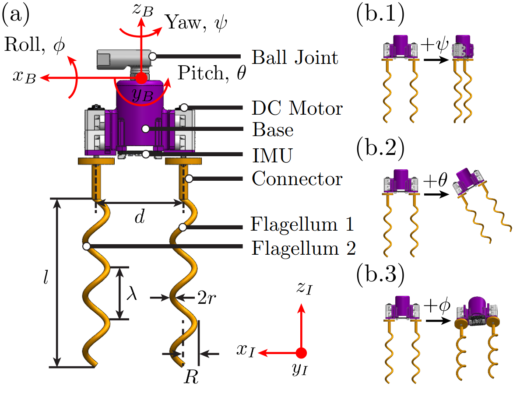

As part of my work with the Structures-Computer Interaction Lab at UCLA, I designed and assembled the robot diagrammed in this schematic.
It is a bio-inspired bi-flagellated robot that is designed to collect rotational data via the on-board IMU.
Flagella are the coily tails of bacteria, which help them traverse fluid at their microscopic level, where viscous forces dominate inertial forces.
At this scale, we used liquid glycerin to simulate the viscous enviornment of bacterial locomotion.
The robot provided the experimental data to compare against simulation data, enabling future research around controlling these motions.
In this research, control was limited to either manual control using joysticks as seen in the video below or preset procedures defined in a micro-controller.

This work was part of a paper studying attitude adjustment for bi-flagellated robots, which I presented at
the 2024 IEEE RoboSoft Conference. The full paper can be found
here.
Thank you to my direct supervisor, Zhuonan Hao, and our PI, Dr. Khalid Jawed, for their direction and guidance in this work.